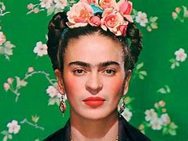

Frida Khalo
Pintora y activista mexicana

Su obra gira en torno a su biografía y a su propio sufrimiento. Fue autora de 150 obras, principalmente autorretratos, en los que proyectó sus dificultades por sobrevivir.
Biografía
- 1907 - Nacimiento de Frida Khalo
- Primeros años - La evidente limitación motri, así como las constantes operaciones quirúrgicas y tratamientos hicieron que se desarrollara de modo diferencia, esto se puede ver reflejado en cuadros como Cuatro habitantes de Ciudad de México o Ella juega sola
- 1922 - Ingresó en la Escuela Nacional Preparatorio, siendo una de las primeras mujeres con la opción de poder estudiar
- 1925 - Sufrió un gravísimo accidente que la obligó a una larga convalecencia, durante este tiempo aprendió a pintar.
- 1929 - - Contrajo matrimonio con el muralista Diego Rivera
- 1932 - Sufrió un aborto que afectó en lo más hondo su delicada sensibilidad y le inspiró dos de sus obras : Henry Frod hospital y Frida y el aborto
- 1939 - Expuso sus pinturas en Francia gracias a una invitación de André Breton
- Últimos años - Después de varias exposiciones y una vida llena de infidelidades y maltratos, la salud de Frida se vió deteriorada, hasta que en 1953 le tuvierón que amputar una pierna debido a una infección. Después de esto Frida, escribió explicitamente en su diario acerca de sus ideas suicidas
- 1954 - Muerte de Frida Khalo.
Obras más conocidas
- Autorretrato- 1926
- Frida y Diego Rivera - 1931
- Frida y la cesárea - 1931
- Las dos Fridas- 1931
- Mi nacimiento-1932
- Autorretrato con colla de espinas - 1940
- Diego en mi pensamiento - 1943
- El abrazo del amor del Universo- 1949
- Viva la vida - 1954